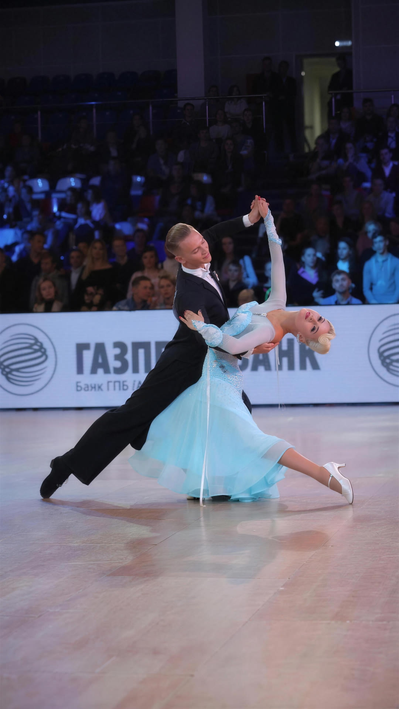
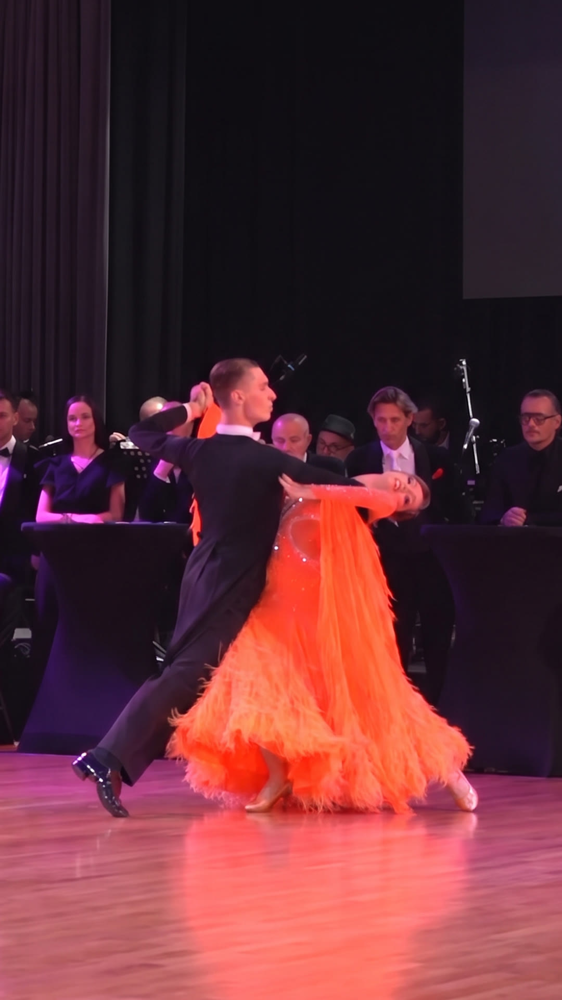
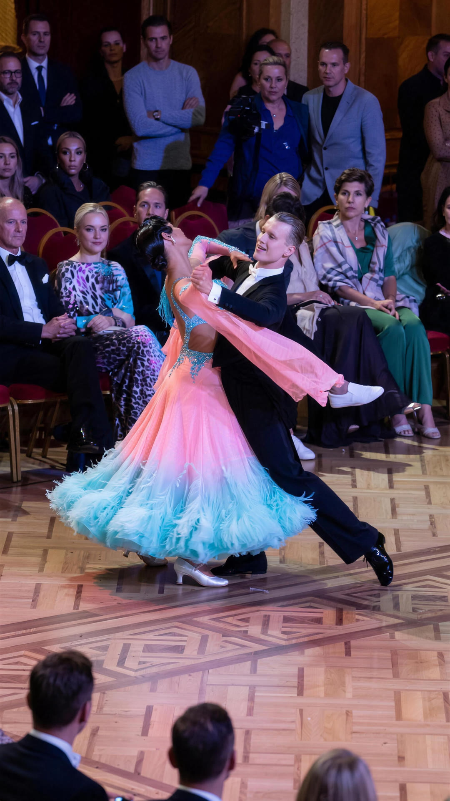
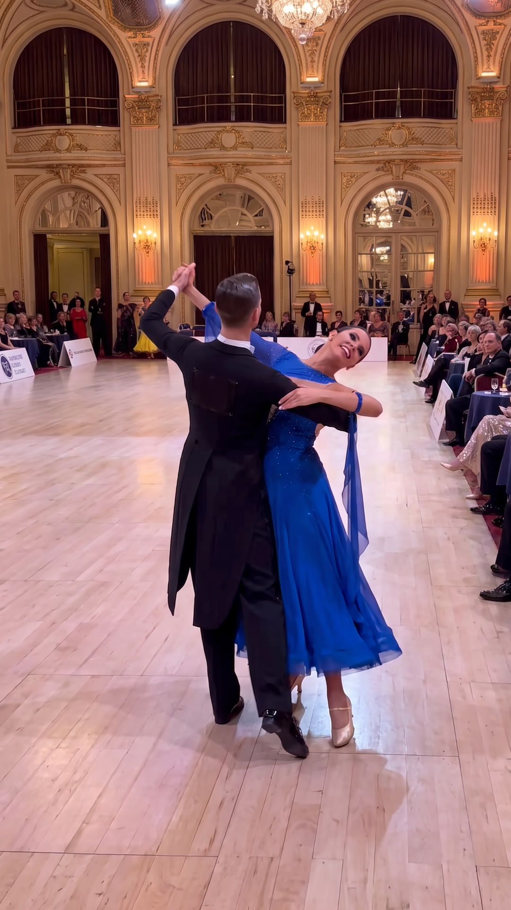
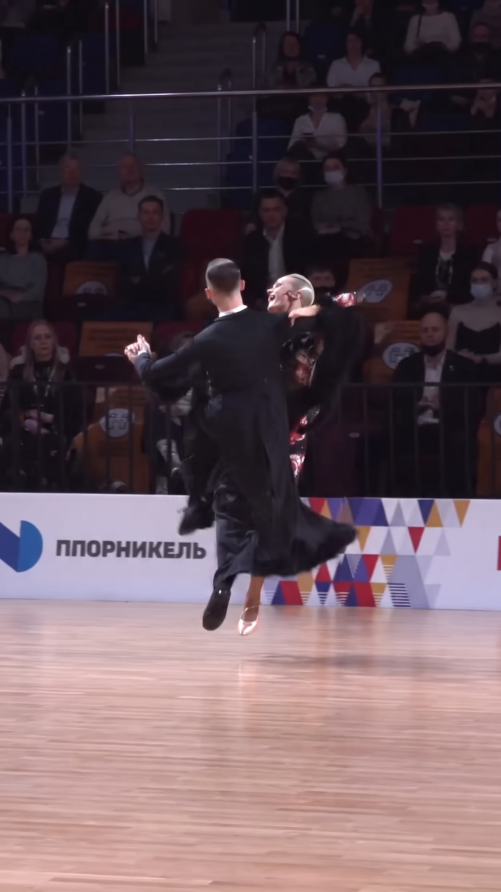
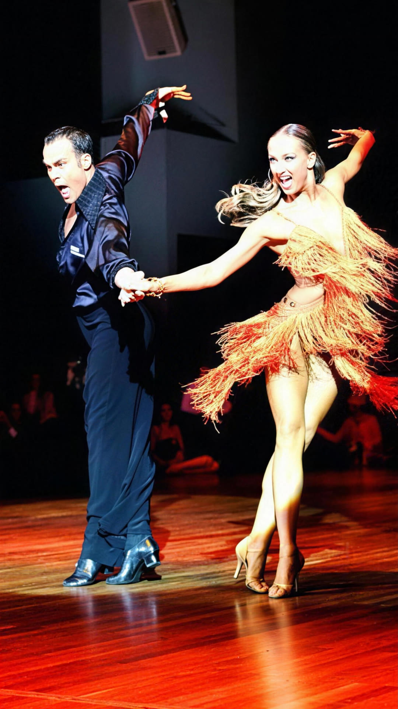
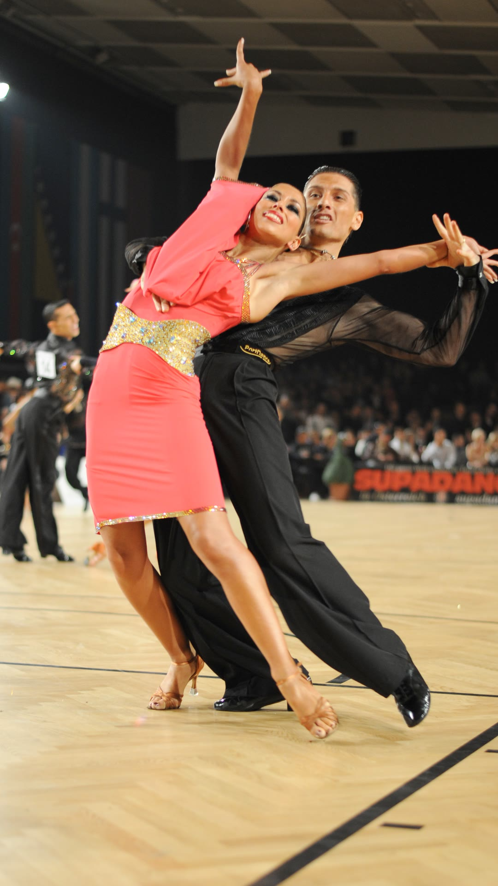
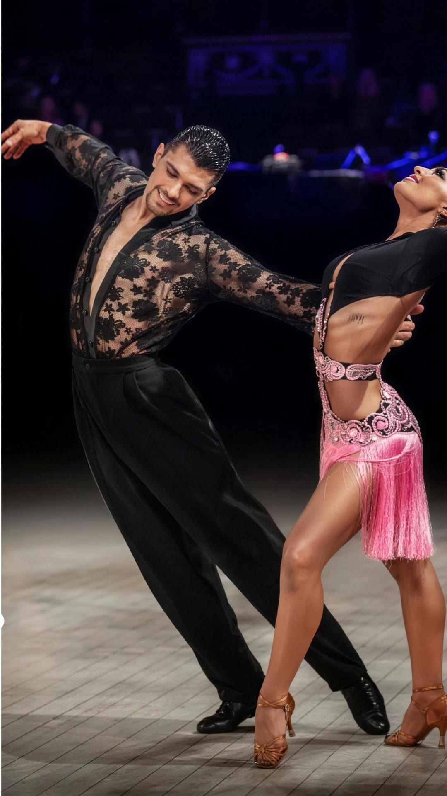
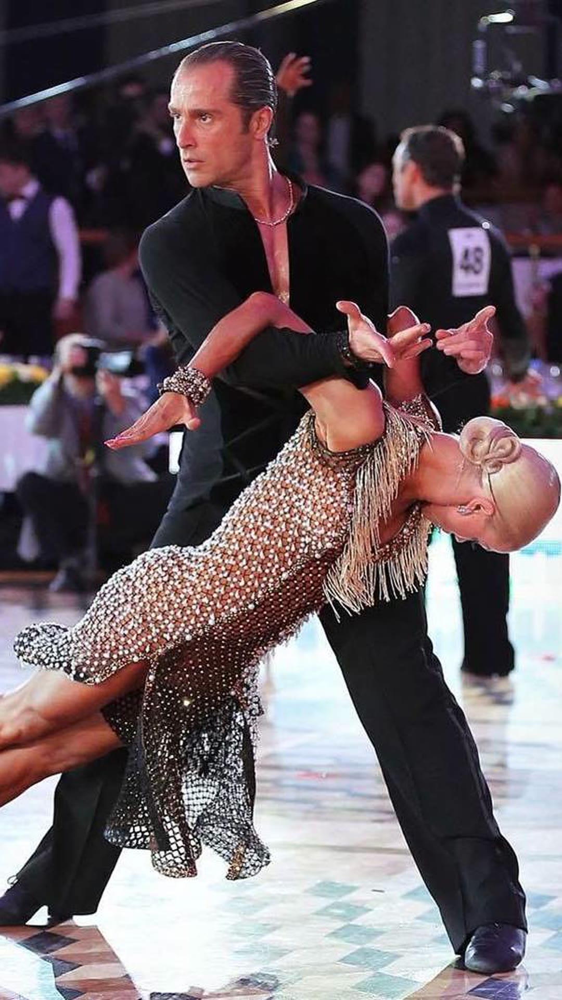
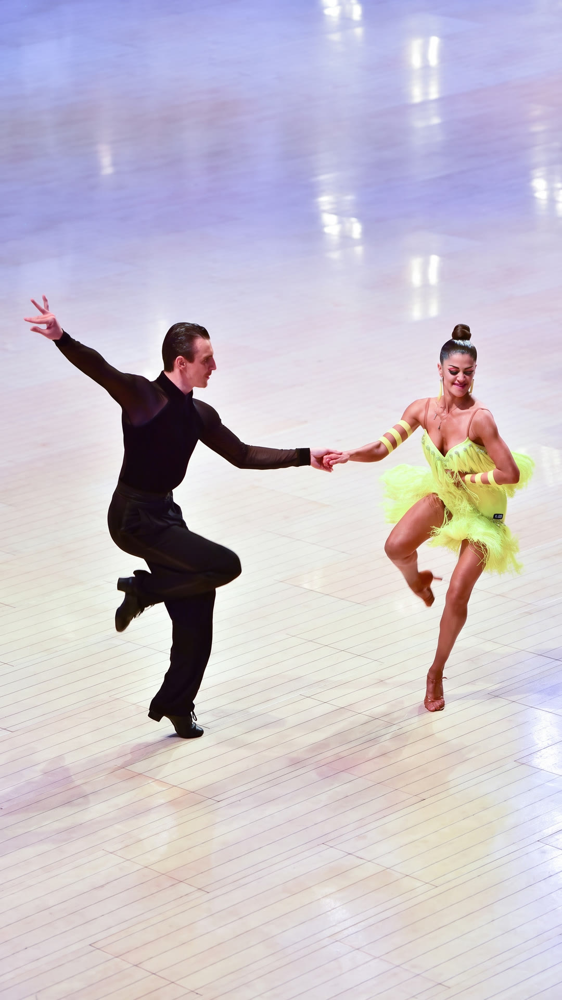

International
Standard
Smooth, sweeping, always in closed hold. Judged on frame, footwork, and how effortlessly two people can move as one.
A passion project by Jordan Heaton
Where athleticism meets artistry, ten dances at a time.
The story
I started ballroom in fifth grade for two reasons: my older brother did it, and I wanted to be better than him at everything. What began as sibling rivalry turned into the discipline that has shaped my life more than any other. Years later I've competed across the country with the top BYU youth teams, finished as a national vice champion, and trained under coaches from Poland, Russia, Italy, and Canada.
Ballroom asks for a strange combination of things: the conditioning of a sprinter, the precision of a violinist, and the ability to communicate with a partner without saying a word. Ten minutes of back-to-back dances will leave anyone ready to crumble. That's the part I love.

The repertoire
International competition splits into Standard and Latin — five dances each. Most competitors specialize. Formation teams train both.
Smooth, sweeping, always in closed hold. Judged on frame, footwork, and how effortlessly two people can move as one.

Rise and fall. The first dance anyone learns and the last one anyone masters.

Staccato. No rise, no fall — just intent, attack, and dead-stop stillness.

Twice the speed of Waltz, all rotation. Natural turns sweep down the floor at full tempo before the fleckerl spins in place — pure whirlwind.

Deceptively hard. Continuous, level movement that should look like walking on silk.

Runs, hops, and flight across the floor. Ten minutes of this ends careers.
Sharp, rhythmic, expressive. Latin trades the closed hold for speed, hip action, and personality that reaches the back row.

Cheeky, syncopated, precise. All personality, delivered on the “and.”

Bounce action from the knees and ankles. Rio, compressed into ninety seconds.

The slowest Latin dance and the hardest to fake. Every beat is exposed.

The man is the matador; the woman, the cape. Shape, posture, and Spanish drama.

Kicks and flicks at a dead sprint. Always danced last, when there's nothing left.
Formation
Formation teams take Standard and Latin technique and expand them into synchronized routines for sixteen dancers. When it works, every movement lands at the same instant, and it's the closest thing to human perfection I've seen on a dance floor. Here's a performance by the BYU Youth Dancesport “A” Team: